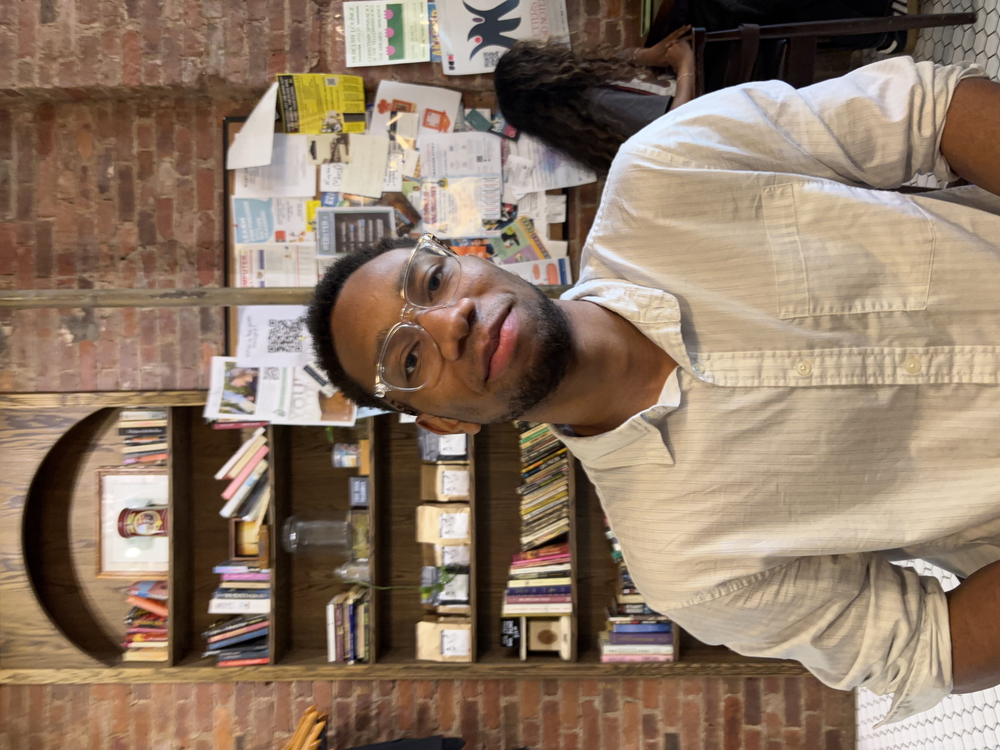
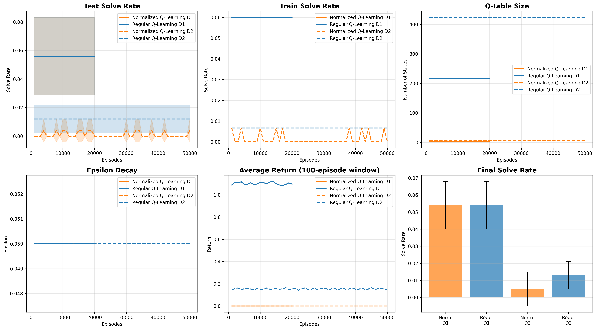
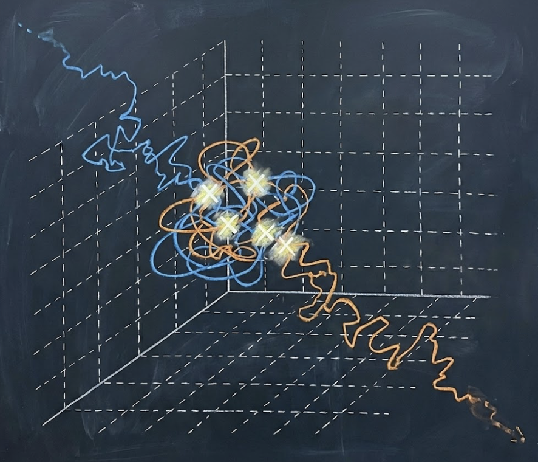
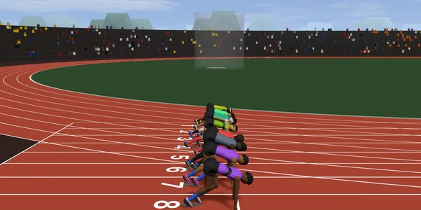
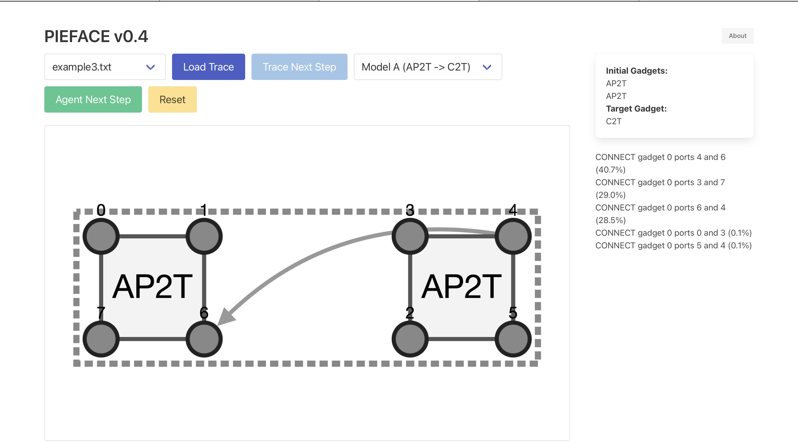

|
Zachary Burton |
 |
I am a research engineer (Member of Technical Staff) at Pramaana Labs, building the verification layer for high-stakes AI. Previously, I was a machine learning engineer at Meta working on Facebook Reels relevance. I graduated from MIT, Course 18 (Mathematics), in February 2026.
I love music; singing, DJing, theory, as well as building games, teaching maths, and reading about sociology, technology, politics, and more! I was born in NYC and raised in the UK, and am based in Brooklyn. Feel free to reach out if you want to chat!
What I work on
At Pramaana, I work on post-training language models for autoformalization and formal reasoning, using supervised fine-tuning and reinforcement learning, and on the benchmarks and evaluation infrastructure used to measure them.
Research
My research investigates what LLMs can and can't do in mathematics, and uses those findings to push them toward mathematical superintelligence. Recent work includes diagnosing inference-time mode collapse in RL-trained Lean theorem provers (ICML 2026 AI4Math Workshop), PhD-level expert evaluation for QEDBench at ICML 2026, a pre-registered study of whether visual-reasoning post-training transfers to math, and RLHF infrastructure for interactive policy personalization (PIEFACE).
Currently exploring
Verifier-based reinforcement learning, why RL post-training improves pass@1 but often not pass@k, off-policy alternatives that keep exploration alive, and inference-time search for theorem proving.
Teaching maths
I graded for 18.600 (Probability and Random Variables), mentored students in 18.100A (Real Analysis), and proposed a personalised online learning platform for MIT's introductory maths classes for the Eloranta Fellowship.
Honors
- NSBE Boston Scholar (2025)
- Singapore International Pre-Graduate Award (2023)
- British Physics Olympiad, Gold (2022)
- Cambridge Senior Physics Challenge, Diamond Award (top 30)
- England U17 Indoor Championships, 60m Bronze (2020)
|
Inference-Time Diversity in RL-Trained Lean Theorem Provers: A Diagnostic Study
ICML 2026 AI4Math Workshop (Poster), First Author arXiv / pdf / poster / code RL-trained Lean provers mode-collapse at inference time, and a fixed schedule of tactic skeletons breaks the plateau. DetailsOn miniF2F-test, doubling DeepSeek-Prover-V1.5-RL's sampling budget from k=32 to k=64 solves zero additional theorems. A fixed schedule of 15 tactic skeletons adds +12.3 ± 4.2 theorems across 3 seeds, and a controlled ablation shows the gain comes from tactic structure, not prompt diversity. |
|
|
QEDBench: Quantifying the Alignment Gap in Automated Evaluation of University-Level Mathematical Proofs
ICML 2026 Main Conference (Poster), Coauthor paper / poster Multi-institution benchmark measuring alignment between LLM judges and human experts on university-level mathematical proofs. PhD-level expert evaluator (probability, discrete mathematics, algorithms). |
|
|
Negative Transfer is the Default: Visual Reasoning to Math on Qwen2.5-VL-7B
Research study, 2026 A pre-registered test of whether post-training on abstract visual reasoning (Raven's matrices) improves math. DetailsEight matched-eval SFT and GRPO conditions were all negative on MATH-500 (base 66.8% → 44.0–61.6%); the damage traces to completion compression rather than format failure. Extended to from-scratch 162M pretraining, where a 1% formal-language (Dyck) warm-up cut tokens-to-threshold on compositional algebra by 12.3% against a scrambled control (3/3 seeds). |
|
|
 |
When Does Tabular RL Actually Break?
Blog Post, 2025 post A systematic study of representation bottlenecks in symbolic algebra, testing where RL breaks on high school math. |
|
 |
Poissonization-Based Collision Threshold Derivation for Random Walks on Lattices
Preprint, 2025 arXiv An expository derivation using Poissonization and Laplace asymptotics to analyze random walks on lattices. |
Other research experience
- Undergraduate Researcher, MIT CSAIL (Fall 2024 – Fall 2025): reinforcement-learning-guided search over symbolic gadget constructions for complexity-theoretic reductions in PSPACE and NL.
- Math Expert Evaluator, QEDBench, Yale University (Fall 2025): gold-standard correctness judgments and error taxonomies for LLM-generated proofs in probability, algorithms, and discrete mathematics.
- Seminar speaker, MIT 18.604 Probability on Trees and Networks (Spring 2025): Thomson's principle, effective resistance and random walk transience; isoperimetric inequalities on graphs and return probabilities.
- Research Intern, Centre for Frontier AI Research (CFAR), Singapore (Summer 2023): deep RL agents for grid-world tasks, funded by the Singapore International Pre-Graduate Award.
Service & teaching
- Reviewer, ICML AI4Math Workshop (2025, 2026)
- Student Representative, MIT Mathematics Department Visiting Committee Panel (Spring 2025)
- Grader, MIT 18.600 Probability and Random Variables (Spring 2025)
- Mentor, MIT 18.100A Real Analysis (Fall 2024)
- Undergraduate Teaching Assistant, MIT 6.0001 Introduction to Programming (Fall 2024)
|
 |
the sprintgame
play A track and field career RPG in the browser, which I have been building solo since June 2026. DetailsYou start at 13 with no PB and race your way toward the Olympics. Its first players came from the competitive track and field community, including athletes and creators. In its first week of analytics (late October 2026), 227 players ran over 40,000 races, and 46% came back on another day. |
|
 |
PIEFACE
website Live RLHF platform for interactive policy personalization on an RL agent over motion-planning gadget structures. DetailsFlask + SQLAlchemy backend serving Maskable PPO models with top-K action inference over a 217-dim action space, custom PyTorch reward model trained on per-action accept/reject feedback, Cytoscape.js trace visualization frontend. |

|
zOS
github Local LLM self-training loop with step-by-step feedback, written with Rust & Tauri. |
|
Formal Complexity Science
Autoformalization of classical NP-completeness reductions in Lean 4, built on Mathlib and CSLib. DetailsFormalizes Karp reductions (SAT ≤ 3SAT ≤ 3-COLORING, with more planned) as machine-checked proofs. |
|
|
LLM Political Persuasion?
paper 17.279 (Political Misinformation in the Age of Social Media) Final Paper: independent empirical study (n=174, randomized) on AI disclosure effects on belief formation in political conspiracy-framing content. |
|
|
Scribe AI
devpost Autocomplete for math handwriting. |
|